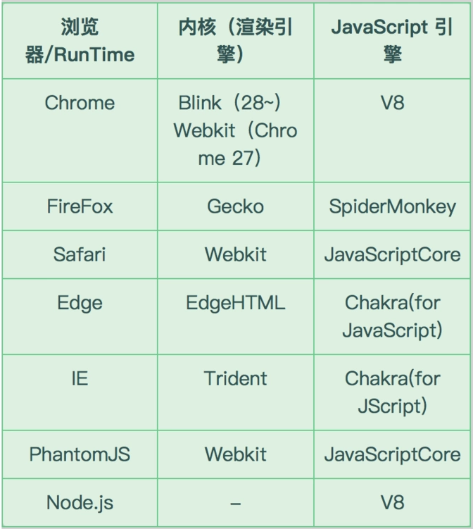
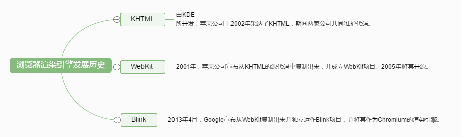
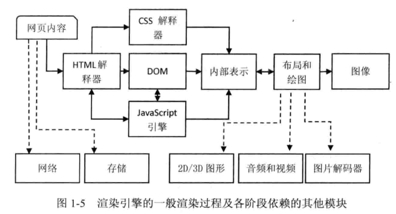

浏览器内核
2019.09.20 @wsl
一、简介
浏览器内核分为两部分：渲染引擎（render engine）、js引擎(js engine)。
渲染引擎：负责对网页语法的解释（HTML、javaScript、引入css等），并渲染（显示）网页。
js引擎：javaScript的解释、编译、执行。
主流内核：Trident(IE)、Gecko(FireFox)、Webkit(Safari)、Presto(opera前内核、已废弃)、blink(Chrome)

二、相关名词
Webkit 是苹果公司基于KDE（Linux桌面系统）的KHTML开源，包括Webcore和JavaScriptCore两个引擎。苹果比较了Gecko和KHTML之后，选择后者的原因，是KHTML拥有清晰的源码结构和极快的渲染速度。
2008年，Google公司以苹果开源项目WebKit作为内核，创建了一个新的开源项目Chromium，该项目的目标是创建一个快速的、支持众多操作系统的浏览器，包括对桌面操作系统和移动操作系统的支持。2013年，Google基于Webkit，衍生出Blink，作为Chromium的渲染引擎。
Chrome浏览器是一个闭源项目，一般选择Chromium的稳定版本作为它的基础，加入了一些私有的编码解码器以支持音视频等，以及整合了Google众多的网络服务。
1. webkit
1）webkit浏览器渲染引擎发展历史：

2）webkit浏览器内核内容介绍：


HTML解释器：解释HTML文本的解释器，主要作用是将HTML文本解释成DOM树。
CSS解释器：级联样式表的解释器，它的作用是规则匹配，为DOM中的各个元素对象计算出样式信息。
布局：结合DOM元素和样式信息，使用RenderObject树并保存计算结果到RenderObject树中。
JavaScript引擎：使用JavaScript代码可以修改网页的内容，也能修改CSS的信息，JavaScript引擎能解释JavaScript代码并通过DOM接口和CSSOM视图模式来修改网页内容和样式信息，从而改变渲染结果。
绘图：使用图形库将布局计算后的各个网页的节点绘制成图像结果。
为什么说transform实现动画较直接设置几何属性性能较好？
1.webkit渲染过程：style -> Layout(reflow发生在这) -> Paint（repaint发生在这） -> Composite，transform是位于Composite（渲染层合并），而width、left、margin等则是位于Layout（布局）层，这必定导致reflow。
2.现代浏览器针对transform等开启GPU加速。
style -> Layout(reflow发生在这) -> Paint（repaint发生在这） -> Composite（transform发生在这个时候）
2. Chromium
Chromium基于webkit，却把Webkit的代码梳理得可读性更高，多进程框架
Chromium加载网页的过程，需要Browser进程和Render进程协作完成。加载网页的过程由Browser进程发起，向服务器请求网页内容的过程也是由Browser进程完成。Render进程负责对下载回来的网页内容进行解析，解析之后得到一个DOM Tree。有了这个DOM Tree之后，Render进程就可以对网页进行渲染了。
3. blink
Chromium项目中研发的渲染引擎，基于并脱离Webkit
更强大的渲染和布局：
- 追求多线程布局
- 样式的重新计算
- 不为隐藏的iframe创建渲染器
- 为插件设置为display：none时，修复插件卸载等旧错误
- 异步卸载iframe，速度更快
4. V8
谷歌公司自主研发的js引擎。
参考链接
https://juejin.im/post/5c0492a36fb9a049e82b435a
https://zh.wikipedia.org/wiki/KHTML
https://zh.wikipedia.org/wiki/WebKit
https://zh.wikipedia.org/wiki/Blink
https://zh.wikipedia.org/wiki/Chromium